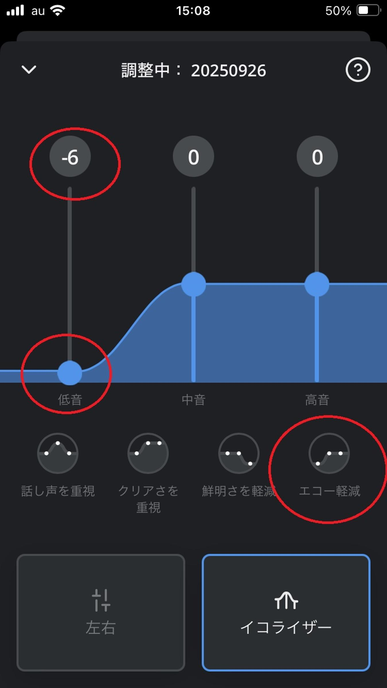
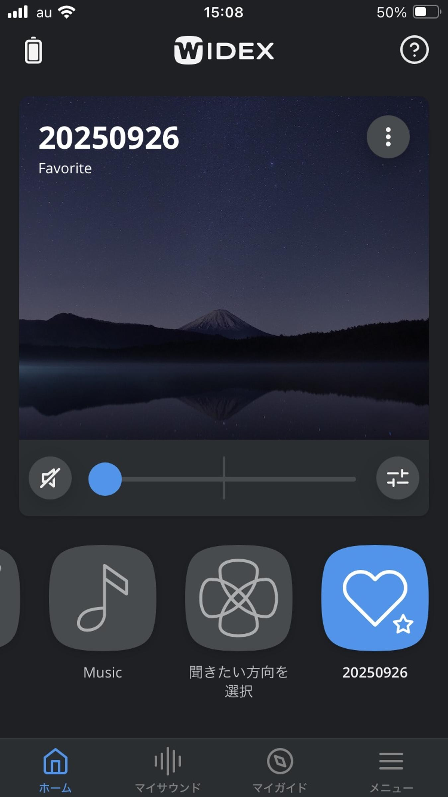

うるがいの話 ある日
最新: 補聴器のアプリ【うるがいの話 ある日】とは 一日だけのプログです
『うるがいの話』の最新一日だけのプログで、通信料が少なく経済的だ。カニの画像をクリックすると全ての日付が載る『うるがいの話』サイトを表示します
|
|
【うるがいの話】 うるがい(ｳﾙｶﾞｲ urugai)とは、『もずくがに』の名前でとても大きくなります。 |
|---|---|
|
|
【カミマヤーの話】 猫のことを方言でマヤーといいます。カミマヤー（kamimayaa）とは、神の猫のことです。 |
|
【たながぁの音楽】 たながぁ（ﾀﾅｶﾞｰ tanagaa）とは手長えびのことで、何種類かあり大きいのは車 エビぐらいになります。 |

|
【ぶながぁの話】 ぶながぁ(ﾌﾞﾅｶﾞｰ bunagaa)とは、赤い髪の毛、赤い身体、そして身長は１ｍ２０ｃｍ ぐらい、川の蟹を食べているの目撃された。場所は沖縄県国頭郡大宜味村のと ある村僕の隣近所に住んでいる爺さんから、聞いた話です。 |
|
|
【ギーマの話】 ギーマ(giima)とは、山原の里山に咲くスズランに似た、 花を付けます。実は食べられます、 気が付くと口の周りが紫になっています。 |
2025年10月04日 (土）補聴器のアプリ
16:13
増幅の度合いを７０％から８０％に上げてください、と先週の先
々週の水曜日に補聴器を調整してもらった。ウン、聞こえると思
った、が、エコーが凄すぎ！、これはヤバイ、元に戻してもらう
かなと思った。が、まてよ、イキナリヘルプはいやだな・・、と
補聴器のアプリで調整できないかと、アプリの説明を調べる。な
い、アプリの画面をいじっているうちに『エコー軽減』という絵
がある、低音を下げればいいということかと、最大に下げる。

それでも、まだエコーがある。さらに、そもそもの音量をアプリ
で下げれるだけ下げてみた。レベル１である、２だとエコーが頻
発する。ま、しばらくはこれで様子をみるとする。しかし、この
補聴器はＡＩを搭載してあると言うが、エコーって認識して軽減
できないのかと思った。

話しは変わるが、ジョギングの間、デジタルプレイヤーを聞いて
いるが、右側の音量がまったくしない。調べてみると、イヤホン
が壊れていた。このパイオニア製のイヤホン２０１４年４月２７
日に買ったものだ（記録をとっている）。同じものは、と探した
があまりにも古く、当然無かった。子供達は、ワイヤレスのイヤ
ホンを利用している。私は、古いデジタルプレイヤーを利用しな
いといけないので、マ、別のものを探すことにする。